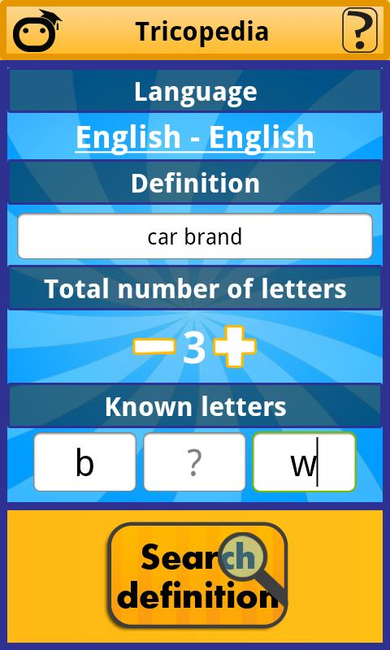
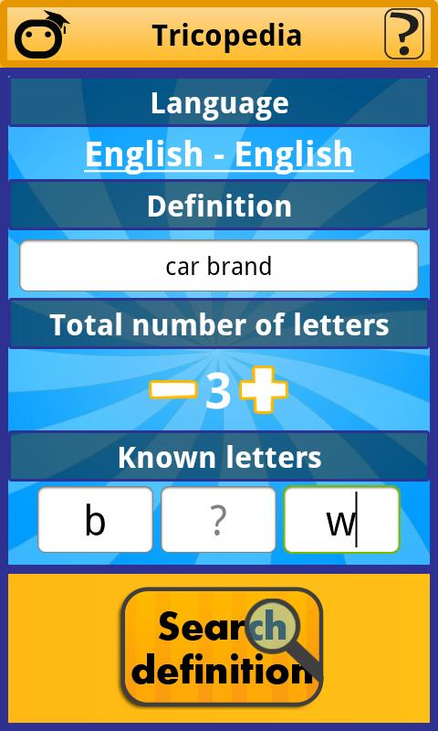

Define: Shai Lachmanovich
Hi, my name is Shai Lachmanovich, and this page is all about my skills, interests and hobbies.
What I do
I'm currently working for Wix in the Tel-Aviv office as a senior front end developer. My team is responsible for creating new web components for our users' benefit. We mostly code in native JavaScript, and work in an Agile Environment.
I'm also in the process of obtaining a Bachelor degree in economics in Tel-Aviv University, and just finished my 4th semester (out of 7).
What I used to do
For around 2½ years before I joined Wix, I was involved in number of initiatives, both as an entrepreneur and as a developer.
DataQuarry
I started DataQuarry with a friend from a previous job. The company gave consultancy services in the fields of BI and Data Mining. The 2 years in DataQuarry gave me lots of experience in how to run a business, how to negotiate and how to market (and also how not to do any of the above).
Tricode Applications
Also a company founded with friends, Tricode was a contractor company for mobile apps. We built premium apps for our clients on both Android and iOS platforms. One of our greatest successes was Pnyphone, an app we actually did for ourselves, which reached great distribution with ~100,000 downloads.
 

Gimme
A startup I started with friends, Gimme was a smart agent for group coupons. This was my first full stack project, where I was responsible of building both the front end and the back end API.
What I'm planning to do
I code in a variety of languages, in different levels of efficiency:
- Java
- JavaScript
- PHP
Interests
Hobbies
Some background
I was born in 1987 in Haifa, Israel. My mom, a high school English teacher, was born in Zurich, Switzerland, so I have both Israeli and Swiss citizenship. My dad, I have 3 sisters, one my senior and two (twins) my junior;
$ cd your_repo_root/repo_name
$ git fetch origin
$ git checkout gh-pages
If you're using the GitHub for Mac, simply sync your repository and you'll see the new branch.
Designer Templates
We've crafted some handsome templates for you to use. Go ahead and continue to layouts to browse through them. You can easily go back to edit your page before publishing. After publishing your page, you can revisit the page generator and switch to another theme. Your Page content will be preserved if it remained markdown format.
Rather Drive Stick?
If you prefer to not use the automatic generator, push a branch named gh-pages to your
repository to create a page manually. In addition to supporting regular HTML content, GitHub Pages support
Jekyll, a simple, blog aware static site generator written by our own Tom Preston-Werner. Jekyll makes it
easy to create site-wide headers and footers without having to copy them across every page. It also offers
intelligent blog support and other advanced templating features.
Authors and Contributors
You can @mention a GitHub username to generate
a link to their profile. The resulting <a> element will link to the contributor's GitHub
Profile. For example: In 2007, Chris Wanstrath (@defunkt),
PJ Hyett (@pjhyett), and Tom Preston-Werner
(@mojombo) founded GitHub.
Support or Contact
Having trouble with Pages? Check out the documentation at http://help.github.com/pages or contact support@github.com and we’ll help you sort it out.